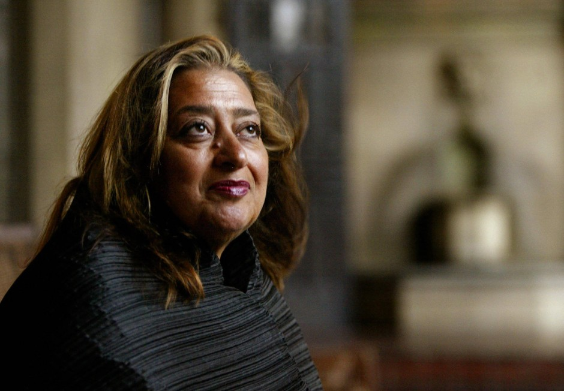

قضوة: زها حديد
زها حديد المهندسة المعمارية الإنجليزية العراقية
زها هي ليست فقط إحدى أشهر المعماريين حول العالم ولكنها أيضاً أول سيدة تحصل على جائزة بريتزكر المعمارية عام 2004 بالأضافه إلي العديد من الجوائز. تم وصف زها حديد بملكة المنحنيات المعمارية وقيل انها حررت الهندسة المعمارية من قيودها وأعطتها شخصية جديدة أكثر إنطلاقاً
.تتضمن أعمالها المركز المائي الذي تم بناؤه من أجل أولمبياد لندن عام 2012، ومتحف جامعة متشيجن في الولايات المتحدة الأمريكية، ودار أوبرا جوانزو في الصين